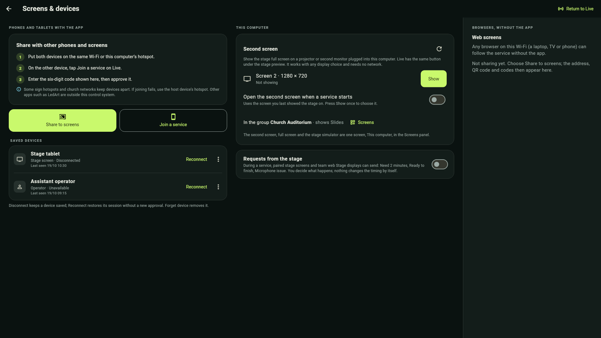
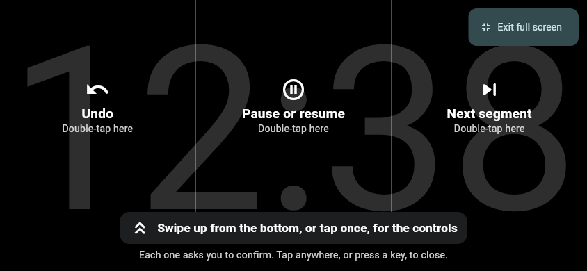
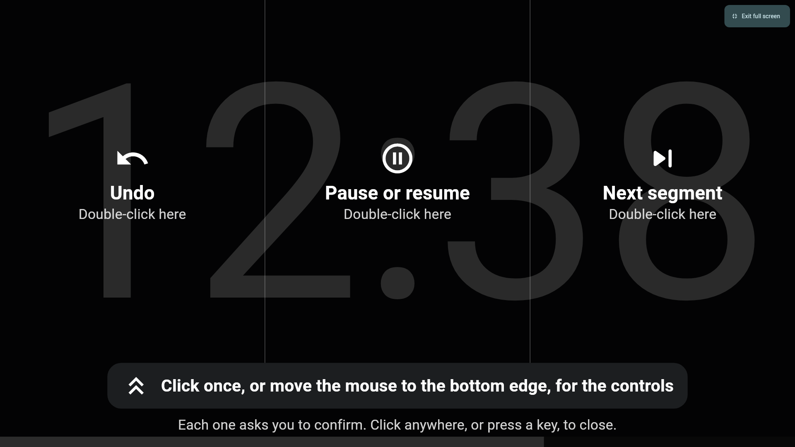
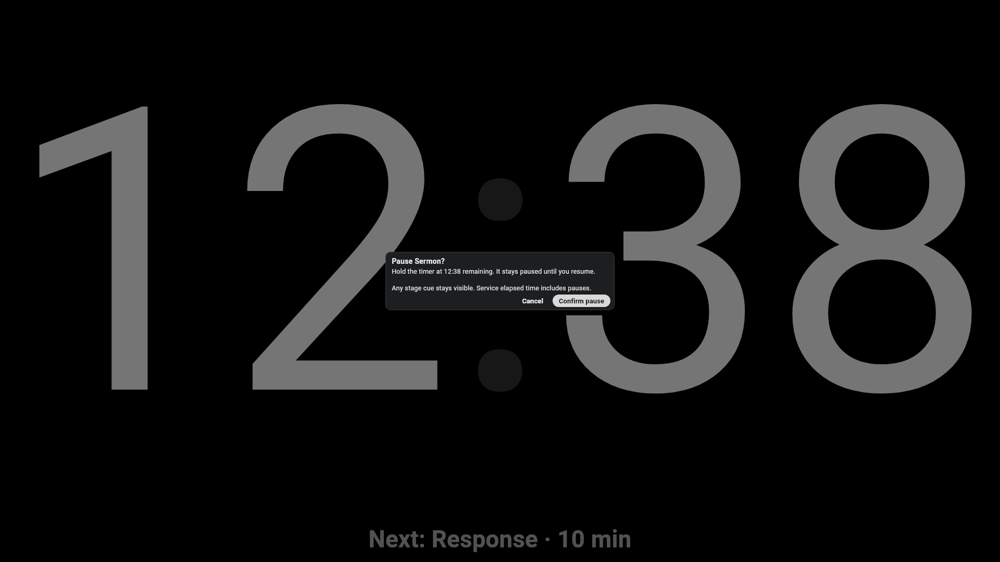
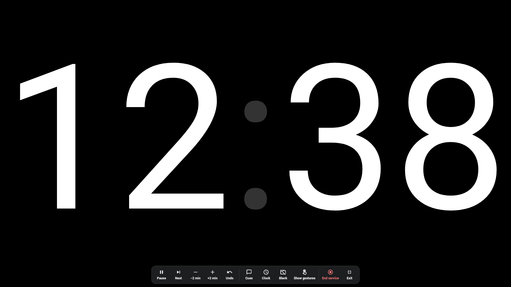
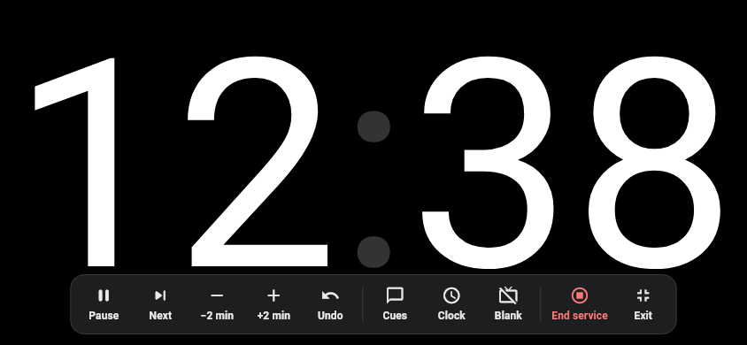

Two ways to show the stage countdown without pairing anything. A second screen is a projector or monitor plugged into the PC. Full screen uses the screen of the device that is running the service.
Show the stage on a second screen (PC)
- Plug the projector or monitor into the PC.
- Press Windows + P and choose Extend. With Duplicate, Windows sees only one screen, so there is nothing to show the stage on.
- On Live, look under the Display preview. A line says what the second screen is doing: "Second screen: not showing".
- Click Show on second screen. The stage fills that screen, with no title bar or taskbar. With more than one extra screen, choose which from the list beside the button.
- The line now reads, for example, "Showing on Screen 2 · 3840 × 2160", and the button becomes Stop.

The second screen shows what a paired stage screen shows: the countdown, prepared cues, automatic warnings, messages from Send message, the clock and a blank screen. It needs no network or pairing, and it works whichever display you have chosen, the LED sign included.
To stop, click Stop, press Esc on that screen, or unplug it. Closing the app closes it too. With no extra screen connected, the line reads "No second screen connected" and there is no button. Lock controls disables the button like every other control.
Show on second screen is also in Commands (Ctrl+K).
See the second screen on Live
While the second screen is showing, the Display preview on Live holds a small live copy of it, in that screen's shape and layout.
| Your display | Where the copy appears |
|---|---|
| Simulator | It takes the Simulator's place, and the chip beside Display preview reads Second screen. |
| LED sign, or phone, tablet or web screens | Their preview stays. The copy sits under it with its own Second screen heading. |
When the second screen stops, the preview goes back to how it was.
Second screen settings
Settings › Screens & devices › Second screen has the same Show and Stop for each screen, and two more choices.


| Setting | What it does |
|---|---|
| Open the second screen when a service starts | Off to begin with. When on, starting a service or a Quick timer shows the stage on the screen you last used. If that screen is not connected, nothing opens and Live says so. It never opens on your own screen by itself, and guided practice does not open it. |
| In the group … | A line such as "In the group Church Auditorium · shows Slides", with a Screens button. What the second screen shows is set for its group on the Screens page. The second screen, full screen and the stage simulator are one screen, This computer. |
The app remembers the screen you last showed the stage on and offers it first next time. After changing the resolution or the arrangement of screens in Windows, click Show once to choose it again. These choices are kept on that computer and are not part of a backup.
Ending the service leaves the second screen open, showing the program's end screen, or the clock if the program has no end screen. Close it with Stop when the room no longer needs it.
Full screen on the device running the service
Use this when your own screen is the one people watch. During a service or a Quick timer, Live can replace itself with the stage picture: the big countdown in your theme's colours, with warnings and cues as they appear on stage.
| To open it | Where |
|---|---|
| The Full screen button | At the top right of Live on a tablet or PC; under the display preview on a phone. |
| ⋮ › Full screen | The Live menu. |
| F11 | On a PC. |
| Full screen in Commands | On a PC, with Ctrl+K. |
To leave, press Esc or F11, or tap or click once and choose Exit in the tray that comes up. A small Exit full screen control also shows at the top right for the first few seconds. On Android, Back leaves it too. While the tray is showing, Esc or Back puts the tray away first; press it again to leave.
When the service ends, full screen on a phone or tablet closes by itself. On a PC it stays open on the end screen, or the clock. See When the service ends below.
A phone or tablet turns sideways. On Android, full screen turns the stage picture to landscape, so the countdown is as large as it can be. It follows the phone between the two landscapes, so turn it the other way round and the stage turns with it. This works even when the phone's auto-rotate switch is off. When you leave full screen, the screen goes back to how it was before. Windows is unchanged.
Nothing changes in what the LED sign, a second screen or paired screens receive.
Running the service from full screen
You can run the whole service without leaving full screen: with gestures, with a small tray of controls, or with the keys on a PC. The same safety rules hold as on Live.
Gestures. Double tap, or double-click, one third of the screen.
| Where | It asks to |
|---|---|
| Left third | Undo the last segment change. With nothing to undo, a short "Nothing to undo" shows and fades. |
| Middle | Pause, or Resume when paused. |
| Right third | Go to the Next segment. On the last segment, a short "This is the last segment" shows and fades. |
Each gesture asks first, in the same small card the keys and buttons use. Nothing changes until you confirm, so a stray double tap can be cancelled.
A tip the first time. The first time full screen opens on a phone, tablet or PC, a short tip shows the three zones and what each does, and how to bring up the control tray: swipe up from the bottom or tap once on a phone or tablet; click once or move the mouse to the bottom edge on a PC.


- It goes away with a tap or click, any key, or after about 8 seconds. It does not come back by itself, and the tap that closes it is not counted as part of a double tap.
- Show gestures in the control tray shows it again whenever you want.
- With the controls locked it does not show, so it never gets in the way of Hold to unlock. It is not used up, and shows the next time.
- With Reduced motion on, it does not fade.
- It shows on this screen only. Nothing of it goes to the LED sign, a second screen or paired screens. Whether it has been shown is kept on that phone or PC, not in backups or program files.




The control tray. A small tray along the bottom holds the controls. To bring it up:
- tap or click once anywhere. It waits a moment, so a double tap is not taken for it;
- swipe up from the bottom edge of the screen;
- on a PC, move the mouse to the bottom of the screen.


| In the tray | What it does |
|---|---|
| Pause or Resume, Next, −2 min, +2 min, Undo | The timer actions. Each asks first, as on Live. |
| Cues | Lists your prepared cues. Choose one to show it. Choose the one that is showing to go back to the timer. |
| Clock | Shows the time of day. The button then reads Timer, which goes back. |
| Blank | Blanks the screen. The button then reads Unblank. |
| Show gestures | Shows the gestures tip again. |
| End service | Asks just as it does on Live. For a Quick timer it reads End timer. |
| Exit | Leaves full screen. |
Cues, Clock and Blank do what they do on Live: they change what every display shows, not only this screen.
- The tray hides after 6 seconds untouched. It stays while the mouse is on it, or while a question from it is open.
- Esc, Back on Android, or a swipe down puts it away at once.
- With Reduced motion on, the tray appears without sliding.
- The tray, the cards and the short messages show on this screen only. Nothing of them is sent to the LED sign, a second screen or paired screens. People watching this screen will see them for a moment.


Keys. On a PC the keys work as they do on Live.
- Every timer action still asks first, in a small card over the stage.
- Next segment still needs its second press.
With Lock controls on, none of this works. The gestures and the tray do nothing, and every key is blocked, Esc and F11 included. A tap, a click or Esc shows Controls locked and Hold to unlock in place of Exit.
When the service ends
What happens depends on the device.
- On a phone or tablet, End service closes full screen and turns the screen back to how it was before. This is the same whether you end it from the tray, from End service on Live, or from a paired device. You are back on Live.
- On a PC, full screen stays open, however the service ends. The people watching see the program's end screen, or the clock if the program is set to end on the Clock, not your Live page. It closes when the next service is set up.
On a PC:
- The timer buttons in the tray grey out. Cues, Clock, Blank and Exit keep working.
- With a program set to end on the Clock, Clock in the tray is greyed out, as the clock is already showing. Blank, cues and messages go back to the clock when they are cleared.
- Leave when the room no longer needs it: Exit in the tray, Esc or F11.
- Full screen cannot be opened after the service has ended. It needs a running service or Quick timer.
What full screen shows
Full screen shows what its group shows, chosen on the Screens page: Timer only, Timer and segment name, Timer and up next, Up next only, Slides or Slides and timer.
| Device | Where to choose |
|---|---|
| PC | It is one screen with the second screen, This computer, so it uses that group's choice. Settings › Screens & devices › Second screen says which group. |
| Phone or tablet | Settings › Screens & devices › Full screen on this phone says which group this phone is in, with a Screens button. Which screen is in which group stays on each device and is not part of a backup. |
Slides show in full screen too. When this device's group is set to show Slides and a slide is up, full screen shows it in place of the countdown. Clear slide gives the countdown back. See Show words with Slides.
A device that has joined another device's service as a stage screen already has its own full-screen stage display, so it is not offered this one. Full screen cannot be opened from the mini timer.